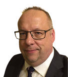

IEEE Computer Society Annual Symposium on VLSI,
July 3-5, 2017,
Bochum, Germany


Sponsored By:


Technical Co-Sponsors:


ISVLSI Organizers are proud to host Dr. Rajiv Joshi who will give a Distinguished Lecture, titled: "Pushing the Limits of Technology, Circuit and Applications for Sub-nm Low Power Design".
The ISVLSI Organizers are excited to announce that Mr. Jens Werner, Vice President Cadence, Field Engineering EMEA, will give a Keynote at ISVLSI 2017! The title is "History and Future of Megatrends in EDA industry"
Additionally, ISVLSI'17 will feature a keynote, given by Prof. Pierre-Emmanuel Gaillardon, from the University of Utah.
Moreover, ISVLSI '17 is happy to announce a talk by Prof. Georges Gielen (from University of Leuven) titled "Electronic circuit design for the smart world era".
Please scroll down for the details.
Pushing the Limits of Technology, Circuit and Applications for Sub-nm Low Power Design

Dr. Rajiv Joshi
Abstract
Power has become the key driving force in processor design as the frequency scale-up is reaching saturation. In order to achieve low power system circuit and technology co-design is essential. This talk focuses on related technology and important circuit techniques for nanoscale VLSI circuits. Achieving low power and high performance simultaneously is always difficult. Technology has seen major shifts from bulk to SOI and then to non-planar devices such as FinFET and Trigates.
This talk consists of pros and cons analysis on technology from power perspective and various techniques to exploit lower power. As the technology pushes towards sub-22nm era, process variability and geometric variation in devices can cause variation in power. The reliability also plays an important role in the power-performance envelope. This talk also reviews the methodology to capture such effects and describes all the power components. All the key areas of low power optimization such as reduction in active power, leakage power, short circuit power and collision power are covered. Usage of clock gating, power gating, longer channel, multi-Vt design, stacking, header-footer device techniques and other innovative methods are described for logic and memory. Low power memories are essential part of neural networks and the talk will describe some of these memories slated for machine learning. Finally the talk summarizes key challenges in achieving low power.
Speaker Bio
Dr. Rajiv V. Joshi is a research staff member and key technical lead at T. J. Watson research center, IBM. He received his B.Tech I.I.T (Bombay, India), M.S (M.I.T) and Dr. Eng. Sc. (Columbia University). His novel interconnects processes and structures for aluminum, tungsten and copper technologies which are widely used in IBM for various technologies from sub-0.5µm to 14nm. He has led successfully predictive failure analytic techniques for yield prediction and also the technology-driven SRAM at IBM Server Group. He commercialized these techniques. He received 3 Outstanding Technical Achievement (OTAs), 3 highest Corporate Patent Portfolio awards for licensing contributions, holds 58 invention plateaus and has over 225 US patents and over 350 including international patents. He has authored and co-authored over 185 papers. He received the Best Editor Award from IEEE TVLSI journal. He is recipient of 2015 BMM award. He is inducted into New Jersey Inventor Hall of Fame in Aug 2014 along with pioneer Nikola Tesla. He is a recipient of 2013 IEEE CAS Industrial Pioneer award and 2013 Mehboob Khan Award from Semiconductor Research Corporation. He is a member of IBM Academy of technology. He served as a Distinguished Lecturer for IEEE CAS and EDS society. He is IEEE, ISQED and World Technology Network fellow and distinguished alumnus of IIT Bombay. He is in the Board of Governors for IEEE CAS. He serves as an Associate Editor of TVLSI. He served on committees of ISLPED (Int. Symposium Low Power Electronic Design), IEEE VLSI design, IEEE CICC, IEEE Int. SOI conference, ISQED and Advanced Metallization Program committees. He served as a general chair for IEEE ISLPED. He is an industry liaison for universities as a part of the Semiconductor Research Corporation. Also he is in the industry liaison committee for IEEE CAS society.
What About Increasing the Functionality of Devices
Rather Than Scaling Them?
Pierre-Emmanuel Gaillardon, PhD
pierre-emmanuel.gaillardon@utah.edu
https://sites.google.com/site/pegaillardon/
University of Utah
Exploiting unconventional physical properties, several nanodevices showed an alternative to Moore’s Law by the increase of their functionality rather than the pure scaling. Innovative device behaviors transduce to new circuit/architecture opportunities. Here, we will introduce Three-Independent-Gate Field Effect Transistors (TIGFETs), a novel class of computation devices, that can, depending on the bias applied to its gate, achieve different modes of operations usually not achievable in a single device. The demonstrated modes of operations are (i) the dynamic reconfiguration of the device polarity; (ii) the dynamic control of the threshold voltage; and (iii) the dynamic control of the subthreshold slope beyond the thermal limit (with a measured steep slope of 6mV/dec over 5 decades of current). I will show both a silicon-based process route and a 2D approach based on WSe2 crystals. Such properties are highly desirable for logic computation. For instance, controllable-polarity devices are logical bi-conditional on both gate values and enable a compact realization of XOR-based logic functions, which are not implementable in CMOS in a compact form. Hyper regular architectures and new EDA tools are then needed to leverage the intrinsic properties of controllable-polarity devices from an application perspective. In this talk, I will cover the different aspects of the design with TIG devices ranging from device fabrication to logic synthesis tools, emphasizing on the importance for interdisciplinary teams in the field of emerging technologies.
Pierre-Emmanuel Gaillardon is an assistant
professor in the Electrical and Computer Engineering (ECE)
department at The University of Utah, Salt Lake City, UT and he
leads the Laboratory for NanoIntegrated Systems (LNIS). He holds an
Electrical Engineer degree from CPE-Lyon, France (2008), a M.Sc.
degree in Electrical Engineering from INSA Lyon, France (2008) and a
Ph.D. degree in Electrical Engineering from CEA-LETI, Grenoble,
France and the University of Lyon, France (2011). Prior to joining
the University of Utah, he was a research associate at the Swiss
Federal Institute of Technology (EPFL), Lausanne, Switzerland within
the Laboratory of Integrated Systems (Prof. De Micheli) and a
visiting research associate at Stanford University, Palo Alto,
CA, USA. Previously, he was research assistant at CEA-LETI,
Grenoble, France. Prof. Gaillardon is recipient of the C-Innov 2011
best thesis award and the Nanoarch 2012 best paper award. He is an
Associate Editor of the IEEE Transactions on Nanotechnology. He has
been serving as TPC member for many conferences, including
DATE'15-16, DAC'16, Nanoarch'12-16, and is reviewer for several
journals and funding agencies. He will serve as Topic co-chair
“Emerging Technologies for Future Memories” for DATE'17. The
research activities and interests of Prof. Gaillardon are currently
focused on the development of reconfigurable logic architectures and
digital circuits exploiting emerging device technologies and novel
EDA techniques.
Electronic circuit design for the smart world era
Prof. Georges Gielen
University of Leuven
The relentless progress of nanoelectronics and semiconductor technology fuel the technological revolution towards a smart world that immersively impacts our daily life, work and play. Proactive healtcare monitoring, wellbeing comforting, cloud-based services, autonomous driving, industry 4.0, etc. are but a few examples. After introducing the broader context, this keynote will focus on core challenges and possible solution paths to the design of electronic circuits for these emerging applications. Design techniques and circuit solutions will be presented towards high energy efficiency, low cost and high robustness. This will be illustrated with some practical IC design examples for sensor-based applications.
History and Future of Megatrends in EDA industry

Jens C. Werner
Vice President, Cadence, Field Engineering EMEA
Basically every industry follows trends, which are defined by the technological progress, society, culture. EDA industry is no exception here. However EDA is supply industry to much larger semiconductors industry, so the challenge is to translate the trends, which are relevant for semiconductor industry into the trends, which are understood and can be executed by the EDA industry in order to provide the necessary support for semis. This presentation will concentrate on following megatrends:
More Moore, more than Moore: How to continue the exponential growth of functionality integration on a chip and which functionality can be added on top of a logic design?
From consumer grade to automotive grade: The rise of demand of microelectronics in automotive industry is a new challenge for EDA, what are the new requirements and how they can be fulfilled?
From transistor to system development: EDA is not only about helping designing analog circuits and digital blocks. In order to deliver customer expectation, EDA vendors must provide tools, which help the customer to integrate designs into a whole system, with implementation and verification
What can be moved to cloud, will be moved to cloud: The sheer amount of data and demand for calculation power is asking for new solutions how this can be handled. Cloud systems are an answer here, but there is no free lunch, the EDA tools must be adapted for the cloud
Core EDA + Big Data = Machine Learning EDA: With the availability of huge amount of data from previous designs and growing calculation power, new class of optimization algorithms come into play, which help to optimize various aspects of design and methodology flows
Computing resources – unlimited, human resources – not: The complexity of designs and new requirements on them, require new generation of engineers, who are able to handle them. The industry must invest into education of these engineers and offer attractive conditions in order to be able to compete with attractive employers from the software industry
Mr. Werner joined Cadence in 1992 as an Application Engineer in Munich. His career with Cadence has spanned 25 years where he has held a variety of engineering and leadership roles in Field Engineering and Services. In 2010, he was appointed leader of the Technical Field Engineering team in EMEA. Prior to his current position, Mr. Werner co-led the VCAD services team in EMEA, built up the Services presence in the Asia Pacific region and headed the global Services Business Program Management team. Mr. Werner is instrumental in driving the development of new capabilities in the Field Engineering team EMEA and has established a program to strengthen the team by hiring experienced industry talent as well as recent graduates. He is customer focused and firmly believes the customer should always be the number one priority. Mr. Werner has over 25 years of experience in electronics and engineering. His areas of expertise include leadership, problem solving, semiconductors, integrated circuits and systems. Prior to joining Cadence Design Systems, Mr. Werner worked as a design engineer for Nanotron Technologies. Attributing his success to his leadership abilities together with his in-depth knowledge of the electronics industry, Mr. Werner enjoys working with productive and innovative teams. He became involved in his profession due to studying Microelectronics in college and was attracted to the fast-paced nature of the industry. Mr. Werner received a Master’s degree in Microelectronics from the Technical University of Berlin. He is also affiliated with ACM and IEEE.


This site is maintained by:
ISVLSI 2017 Web Chair
Theo Theocharides (ttheocharides@ucy.ac.cy), University of Cyprus.